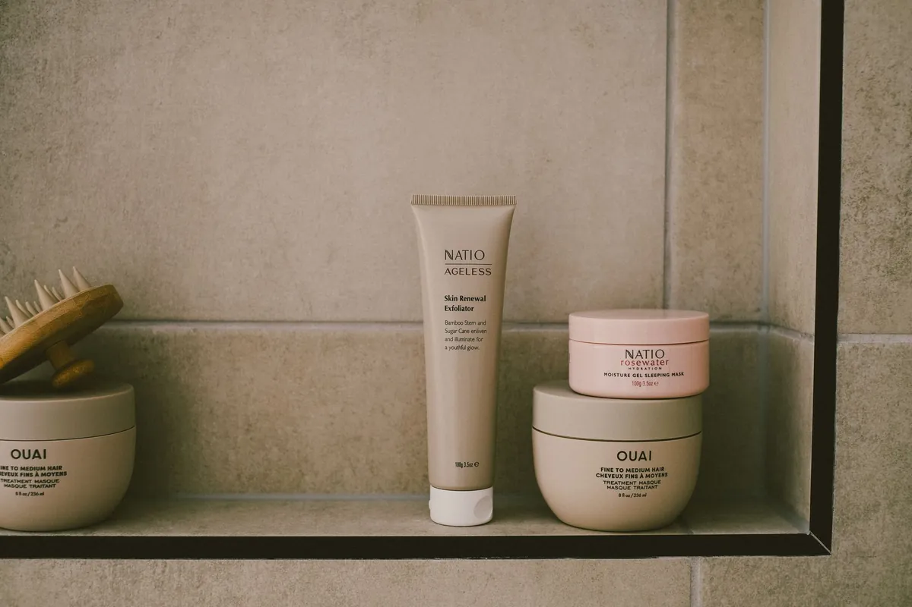

Become a UGC creator over 40
Older Influencers and GenX Creators: Why the Grown-Up Lane Is Open

Older influencers: who counts, and why it matters
Let's clear something up first. "Older influencer" is not an official title. Nobody hands you a membership card at the door. It is simply what people type into a search bar when they want creators who look and live more like them: grown-ups with real kitchens, real schedules and real opinions. You see it in searches like "influencers over 50" and "fashion influencers over 50," and in phrases like GenX influencer or UGC creator over 40.
I'm Trish, a GenX UGC creator, model, public speaker and Navy veteran in Tampa. I would rather talk about GenX audiences than anybody's birthday, so here is the working definition I use. Pew Research Center defines Generation X as people born between 1965 and 1980 (opens in a new tab). Add up the Census Bureau's 2024 population estimates for the ages that line up with those birth years and you get about 65.6 million Americans. That is our own calculation from the Census single-year-of-age file (opens in a new tab), not a published Census "Gen X" number, and the age window only approximates the birth years. Still, that is a whole lot of people who remember rewinding a cassette with a pencil.
So when I say "older influencers" in this post, I mean creators who speak to that grown-up crowd. The label is not the interesting part. The data behind the lane is.
The money is grown-up
Here is the part brands tend to underrate. In the Bureau of Labor Statistics Consumer Expenditure Surveys for 2024, households headed by someone in Gen X were 26.7% of US households but accounted for 32.9% of all consumer spending, per the BLS generation tables (opens in a new tab). That is a bigger slice of the spending than of the headcount.
Zoom out to everyone 50 and up and the numbers get louder. AARP's Longevity Economy Outlook 2026 (opens in a new tab) reports that households headed by someone 50 or older account for more than half of all US consumer spending: $10.7 trillion in 2024. The same report puts the economic activity of Americans 50 and older at $12.5 trillion in 2024, which is 43% of US GDP.
| Measure | Figure | Source |
|---|---|---|
| Americans in the Gen X birth years (ages 44 to 59 on July 1, 2024) | About 65.6 million (our calculation) | U.S. Census Bureau, Vintage 2024 estimates |
| Gen X share of US households (2024) | 26.7% | BLS Consumer Expenditure Surveys |
| Gen X share of US consumer spending (2024) | 32.9% | BLS Consumer Expenditure Surveys |
| Spending by households headed by someone 50+ (2024) | $10.7 trillion, more than half of US consumer spending | AARP Longevity Economy Outlook 2026 |
| Economic activity of Americans 50+ (2024) | $12.5 trillion, 43% of US GDP | AARP Longevity Economy Outlook 2026 |
A few honest footnotes, because I'm not here to oversell you. The BLS figures describe households by the birth year of the person who heads them, not individual people. The AARP numbers cover everyone 50 and older, so they include plenty of folks who are not GenX. And none of this proves any one creator will sell anything. What it does show is that the grown-up wallet is not a niche. It is most of the store.
Grown-ups are on the creator apps
"Sure, Trish, but are grown-ups actually on TikTok?" Fair question. Pew Research Center's 2025 survey of US adults says yes, more than a lot of people assume. Per its Social Media Fact Sheet (opens in a new tab), 62% of adults ages 30 to 49 use Instagram and 44% use TikTok. Among adults 50 to 64, 40% use Instagram and 30% use TikTok.
Yes, younger adults use these apps more. Nobody is arguing that. But 30% of the 50 to 64 crowd on TikTok is not a rounding error, and the same Pew table shows 85% of that age group on YouTube and 74% on Facebook. Grown-ups scroll. We just do it with our reading glasses pushed up on our heads.
For a creator, that means your people are already in the room. For a brand, it means a grown-up face in a video is not a stretch. It is meeting buyers where they already hang out.
Older influencer or UGC creator?
This is where a lot of people over 40 get stuck, so let me untangle it. "Influencer" and "UGC creator" get tossed around like they are the same job. They are not. In common industry usage, as Hootsuite's vendor blog (opens in a new tab) puts it, UGC creators make content for the brand's channels, while influencers post content on their own.
The influencer lane
An influencer sells access to an audience they built. The brand pays for a post on the creator's account, seen by the creator's followers. Follower count and engagement matter a lot here, because the audience is the product.
The UGC creator lane
A UGC creator sells the content itself. The brand gets the video files and runs them on its own pages and in its own ads, to its own customers. That means you do not need a big following to do UGC, which is great news if you are starting from zero at any stage of life.
One exception worth knowing: some platform programs do set follower minimums. TikTok Shop's US affiliate program, which pays commission on sales from shoppable content, says creators must have a minimum of 1,000 followers (opens in a new tab), per TikTok Shop Academy as of October 2026. Those rules change often, so check the current policy before you plan around it.
You can absolutely do both jobs. Plenty of creators post on their own feed and also make UGC for brands. I break the differences down further in UGC vs influencer: which one a brand needs.

How GenX creators stand out
Here is what I think gives grown-up creators an edge. This is my take as a creator, not a study, so read it as advice from a friend who does this work.
Lead with humor and honesty
GenX grew up on sarcasm and healthy skepticism. We can smell a fake from a mile away, and so can the people watching your videos. Be funny, be direct and say what you actually think. My whole pitch for this business is to "turn your doom scrolling into money rolling," and that only works when the person on screen sounds like a real human.
Shoot where real life happens
You do not need a studio. The kitchen counter, the garden bed, the driver's seat of your car: those are the sets grown-up buyers recognize, because that is where they use the stuff. A brand selling a blender wants to see it next to the coffee maker, not floating in a white void.
Pick the niches grown-ups buy
Play to what you know. The categories I work in are supplements and food, pet products, car products, kitchen gadgets and appliances, planting and gardening, and makeup, skin care and hair care. Grown-ups buy all of those, and grown-ups tend to believe other grown-ups about them. The categories I won't touch: alcohol, tobacco and gambling. Know your own lines before a brand asks.
Only show what you really use
This one is not just good manners. It is the rule. The FTC's guide for influencers says plainly that you can't talk about your experience with a product you haven't tried (opens in a new tab). So if you rave about a serum, you had better have used the serum. And no miracle claims, ever. When a brand gives you anything, free product included, disclose it in the video. A product showing up in one of my videos means I use it. It does not mean that brand hired me.
My most-viewed TikTok
My most-viewed TikTok to date.
Watch on TikTok: My most-viewed TikTok (opens in a new tab)These are my own TikTok posts, shown as samples of my work. TikTok Shop videos can earn me a commission when viewers buy through them. A product appearing here does not mean that brand hired me.
That is my most-viewed TikTok, at 1.1 million views. I'm not sharing it to brag (okay, maybe a little). I'm sharing it because it shows grown-up content can travel just as far as anybody else's when it is real. If you are a brand wondering how I work, it is all on my work with me page.
A note for veteran creators
I'm a Navy veteran, so this one is close to home. According to the SBA Office of Advocacy (opens in a new tab), veterans represent 4.3% of business owners in the US, based on the latest official data. Take that as context, not a promise. It says nothing about how big any one creator's business is, mine included.
What I will say is that the habits the military builds, like showing up on time, following the brief and finishing the job, are the same habits that make a creator easy to work with. I've presented at Military Creator Con on getting set up as a creator. If your group wants a talk like that, my speaking page has the details.
Start here
If the grown-up lane sounds like your lane, here is where to go next:
- Read my GenX guide on how to become a UGC creator over 40. That is the full playbook.
- Check how much UGC creators make so you know the rate ranges before your first pitch.
- On the brand side? Start with UGC for brands.
- Want the backstory? Here is more about me.
The short version: the grown-up audience is big, it spends, and it is on the apps. The lane is open. Bring your humor, your honesty and your real kitchen.
Questions people ask
Are older influencers in demand?
I can't point you to a study that measures how often brands hire older creators, so I won't pretend one exists. What the data does show is a big grown-up audience that spends: per the BLS, households headed by Gen X were 26.7% of US households in 2024 but accounted for 32.9% of consumer spending, and Pew finds 30% of US adults ages 50 to 64 use TikTok. Brands that sell to grown-ups need content that speaks to them.
What is a GenX UGC creator?
A GenX UGC creator is someone from Generation X (born 1965 to 1980, per Pew Research Center) who makes short-form videos that brands run on their own channels and in their own ads. The brand gets the content, so the creator does not need a big following of their own.
Do you have to be young to make UGC?
No. UGC is about making content a brand can use, not about your age or the size of your audience. Some platform programs have their own rules. TikTok Shop's US affiliate program, for example, requires at least 1,000 followers as of October 2026, so check the current policy for any program you join.
References
- Where Millennials end and Generation Z begins (opens in a new tab). Pew Research Center.
- Annual estimates of the resident population by single year of age and sex, Vintage 2024 (data file) (opens in a new tab). U.S. Census Bureau.
- Consumer Expenditure Surveys, generation of reference person: aggregate expenditure shares, 2024 (Table 2602) (opens in a new tab). U.S. Bureau of Labor Statistics.
- Older Americans Are Boosting the Economy for All (Longevity Economy Outlook 2026) (opens in a new tab). AARP.
- Social Media Fact Sheet (opens in a new tab). Pew Research Center.
- User-generated content (UGC) guide (vendor blog) (opens in a new tab). Hootsuite.
- Creator Eligibility Policy (opens in a new tab). TikTok Shop Academy (Seller University US).
- Disclosures 101 for Social Media Influencers (opens in a new tab). Federal Trade Commission.
- Facts About Small Business: Veteran Ownership Statistics 2025 (opens in a new tab). U.S. SBA Office of Advocacy.
Keep reading

Start here
How to Become a UGC Creator Over 40 (A GenX Guide)
A GenX creator's step-by-step guide to starting UGC after 40: pick your niches, film samples with products you already use, get set up, pitch brands and disclose the right way.

How Much Do UGC Creators Make? Honest 2026 Rate Ranges
Labeled 2026 UGC rate ranges from vendor guides and marketplaces, what pushes a quote up, how TikTok Shop commission works, and a rate card you can build today.

Start here
UGC for Brands: The Grown-Up Guide to Creator Videos That Sell
What UGC means for a brand, where it runs, which rights to get in writing, and why households headed by Gen X are worth a creator who looks like them.